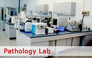

3T, 1.5T Open, 1.5T Closed MRI

Specialized MR Radiologists ACR Accredited in MRI Comfortable & Fast Exam Only High Field Magnet to accommodate obese patients, up to 550 pounds
Specialized Pathology Lab
Quality Pathology Services with Superior Customer Satisfation
The Void Diagnostic Center, provides high-quality, individualized services to special education students, their families and school districts. Services are provided by expert, interdisciplinary teams of diagnostic professionals, including educational specialists, speech/language specialists, secondary specialists, school psychologists, clinical psychologists, and pediatricians. The Void Diagnostic Center, is one of three regional assessment centers operated by the State Special Schools and Services Division of the California Department of Education. The Centers provide assessment, training and technical assistance to all Local Educational Agencies (LEAs) in California. Each of the three Centers serves a specific geographic region in Bangladesh.
Why We Succeed
At Void DC our team of physicians and technologists along with our state-of-the-art diagnostic equipment provides you clinical expertise. The result is the highest quality images, which allow our skilled team of radiologists to make accurate diagnosis so that you receive the most effective treatment.
Why We Can Do
Void Diagonestic Center strives to provide our patients, our physicians and our community the highest quality imaging available. Please take a few moments to see why DCA is different than other facilities and why you want your family, your friends and yourself to trust your healthcare to Void Diagonestic Center.
Medical Diagnosis
Diagnosis is often challenging, because many signs and symptoms are nonspecific. For example, redness of the skin (erythema), by itself, is a sign of many disorders and thus doesn't tell the healthcare professional what is wrong. Thus differential diagnosis, in which several possible explanations are compared and contrasted, must be performed. This involves the correlation of various pieces of information followed by the recognition and differentiation of patterns. Occasionally the process is made easy by a sign or symptom (or a group of several) that is pathognomonic.
Medical Uses
Diagnosis is often challenging, because many signs and symptoms are nonspecific. For example, redness of the skin (erythema), by itself, is a sign of many disorders and thus doesn't tell the healthcare professional what is wrong. Thus differential diagnosis, in which several possible explanations are compared and contrasted, must be performed. This involves the correlation of various pieces of information followed by the recognition and differentiation of patterns. Occasionally the process is made easy by a sign or symptom (or a group of several) that is pathognomonic.
High Configuration Echo Mechine Here
An echocardiogram test gives good information about the structure and function of the heart.
The amount of ultrasound that echoes back depends on the density of the tissue the sound has hit. Therefore, the different structures send back different echoes. For example, ultrasound travels freely through fluid so there is little echo from blood in heart chambers. But, heart valves are dense tissues so ultrasound hitting a valve will echo back clearly.